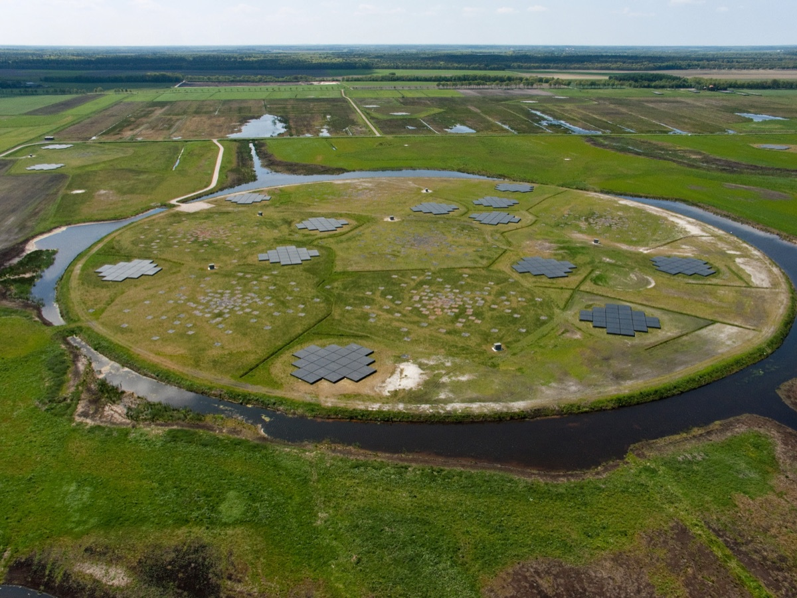
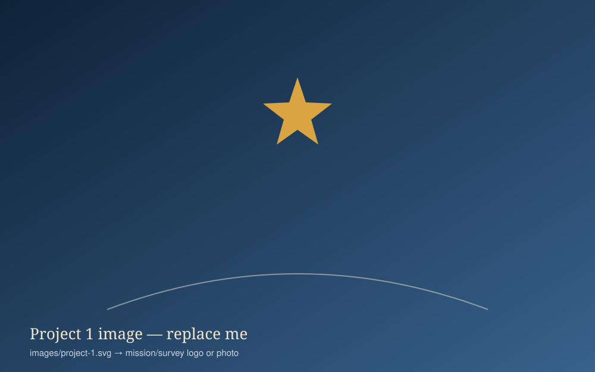

LOFAR — Galactic science
I work on the Galactic Science programme and early science operations with the LOw-Frequency ARray, the distributed low-frequency radio telescope across Europe.
Missions, surveys and instruments. The research page is organised by scientific question; here each card is a named project.

I work on the Galactic Science programme and early science operations with the LOw-Frequency ARray, the distributed low-frequency radio telescope across Europe.

I worked on a programme searching for exoplanet transits using observations from NASA’s two STEREO heliospheric observatories — an unconventional use of a solar-physics mission to find planets.

I carry out scientific planning for programmes on the Atacama Large Millimeter/submillimeter Array, targeting the star-formation and molecular-line science described on the research page.
| Mission / study | Role |
|---|---|
| Herschel — SPIRE instrument (ESA far-infrared space observatory) | Involved since 1982; co-author of the Phase A study when the mission was still called FIRST; SPIRE consortium member |
| Planck — HFI (ESA cosmic microwave background mission) | Co-investigator on the High Frequency Instrument detector programme |
| AKARI (JAXA far-infrared all-sky surveyor) | Member of the UK consortium (Open University, Imperial College, Sussex, SRON, Groningen) that built the software pipelines for the survey, with JAXA collaborators |
| Darwin & GENIE (ESA exoplanet interferometry concepts) | Science Team member for Darwin; involved in the GENIE nulling-interferometer pathfinder study |
| SPICA (JAXA/ESA infrared space telescope concept) | Helped develop the case for the European Spectrometer Instrument (ESI) |
| FIRM (ESA next-generation far-infrared mission study) | Contributed to the mission case in the 2020–2025 programme timeframe |